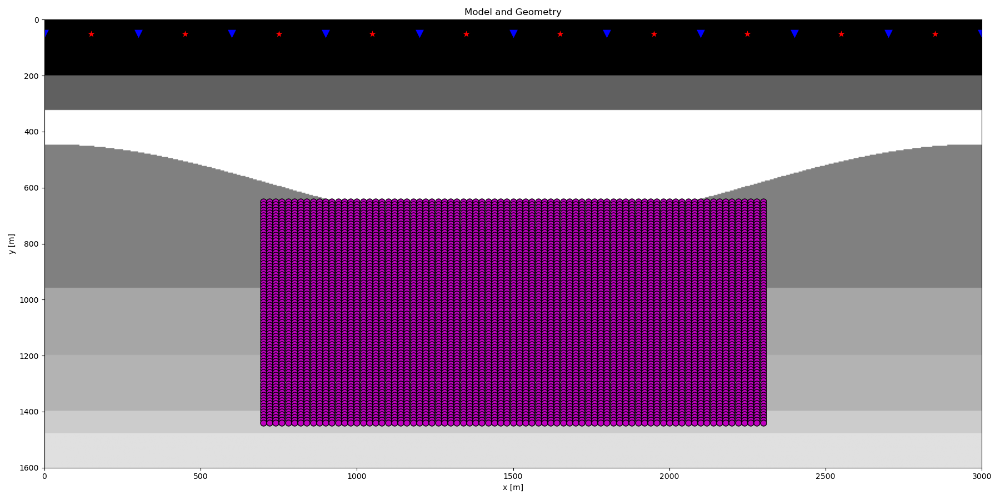
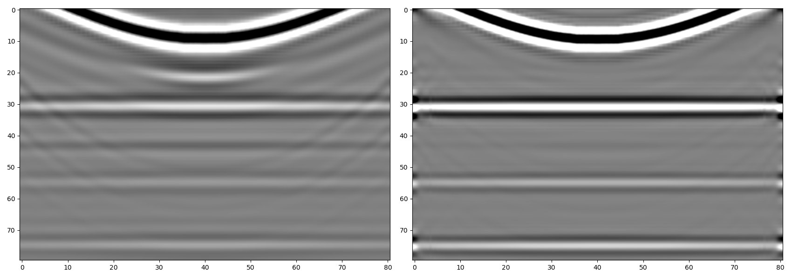
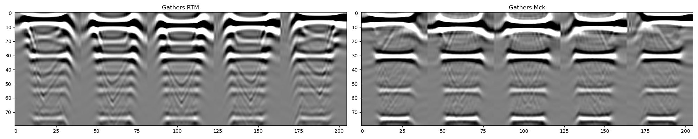

Note
Click here to download the full example code
6. Imaging with Marchenko fields¶
This example shows how to perform target-oriented imaging via the
documentation and shows how to set-up and run the
pymarchenko.imaging.MarchenkoImaging routine. Whilst this is a
wrapper function that can use any of the implemented Marchenko redatuming
schemes we will use here pylops.waveeqprocessing.Marchenko. For
each depth level, up- and down-going fields will be retrieved and used to
perform MDD. Finally both zero-offset, zero-time images and angle gathers
are produced.
# sphinx_gallery_thumbnail_number = 3
# pylint: disable=C0103
import warnings
import os
import numpy as np
import matplotlib.pyplot as plt
from pymarchenko.imaging import MarchenkoImaging
warnings.filterwarnings('ignore')
plt.close('all')
os.environ["OMP_NUM_THREADS"] = "1"
os.environ["MKL_NUM_THREADS"] = "1"
Let’s start by defining some input parameters and loading the test data
# Input parameters
inputfile = '../testdata/marchenko/input.npz'
vel = 2400.0 # velocity
toff = 0.045 # direct arrival time shift
nsmooth = 10 # time window smoothing
nfmax = 500 # max frequency for MDC (#samples)
niter = 10 # iterations
igaths = [21, 31,
41, 51,
61] # indeces of angle gathers
nalpha = 41 # number of angles in Angle gathers
inputdata = np.load(inputfile)
# Receivers
r = inputdata['r']
nr = r.shape[1]
dr = r[0, 1]-r[0, 0]
# Sources
s = inputdata['s']
ns = s.shape[1]
ds = s[0, 1]-s[0, 0]
# Imaging domain
nvsx, nvsz = 81, 80
dvsx, dvsz = 20, 10
vsx = np.arange(nvsx)*dvsx + 700
vsz = np.arange(nvsz)*dvsz + 650
VSX, VSZ = np.meshgrid(vsx, vsz, indexing='ij')
# Density model
rho = inputdata['rho']
z, x = inputdata['z'], inputdata['x']
# Reflection data (R[s, r, t]) and subsurface fields
R = inputdata['R'][:, :, :-100]
R = np.swapaxes(R, 0, 1) # just because of how the data was saved
wav = inputdata['wav']
wav_c = np.argmax(wav)
t = inputdata['t'][:-100]
ot, dt, nt = t[0], t[1]-t[0], len(t)
plt.figure(figsize=(18,9))
plt.imshow(rho, cmap='gray', extent=(x[0], x[-1], z[-1], z[0]))
plt.scatter(s[0, 5::10], s[1, 5::10], marker='*', s=150, c='r', edgecolors='k')
plt.scatter(r[0, ::10], r[1, ::10], marker='v', s=150, c='b', edgecolors='k')
plt.scatter(VSX.ravel(), VSZ.ravel(), marker='.', s=250, c='m', edgecolors='k')
plt.axis('tight')
plt.xlabel('x [m]')
plt.ylabel('y [m]')
plt.title('Model and Geometry')
plt.xlim(x[0], x[-1])
plt.tight_layout()

Let’s perform imaging now
Out:
Elapsed time (mins): 56.39186234871546
Finally let’s display the images
fig, axs = plt.subplots(1, 2, figsize=(17, 6))
axs[0].imshow(iss, cmap='gray', vmin=-1e3, vmax=1e3, interpolation='sinc')
axs[0].axis('tight')
axs[1].imshow(imck, cmap='gray', vmin=-1e-2, vmax=1e-2, interpolation='sinc')
axs[1].axis('tight')
fig.tight_layout()

And the angle gathers
ngath = len(igaths)
fig, axs = plt.subplots(1, 2, figsize=(20, 4))
axs[0].imshow(ass.transpose(0, 2, 1).reshape(ngath * nalpha, nvsz).T,
cmap='gray', vmin=-1e6, vmax=1e6,
interpolation='sinc')
axs[0].axis('tight')
axs[0].set_title('Gathers RTM')
axs[1].imshow(amck.transpose(0, 2, 1).reshape(ngath * nalpha, nvsz).T,
cmap='gray', vmin=-1e1, vmax=1e1,
interpolation='sinc')
axs[1].set_title('Gathers Mck')
axs[1].axis('tight')
fig.tight_layout()

Total running time of the script: ( 56 minutes 24.927 seconds)